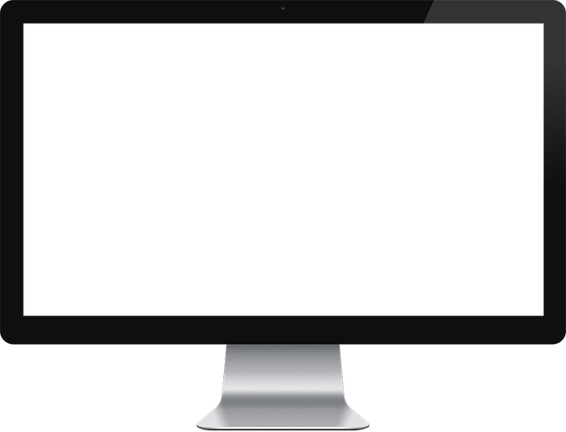
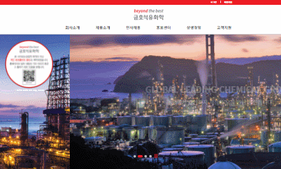
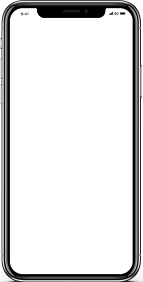
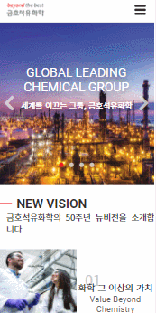
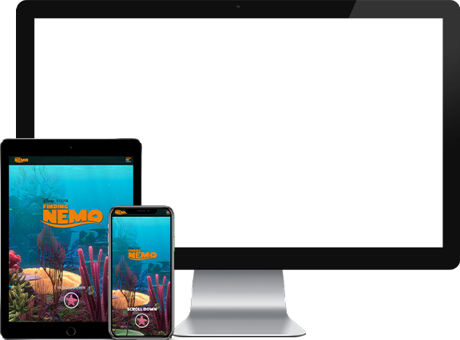
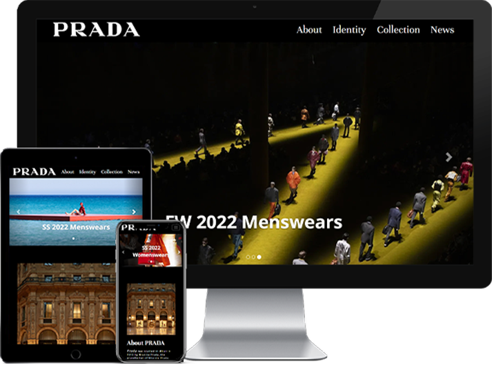
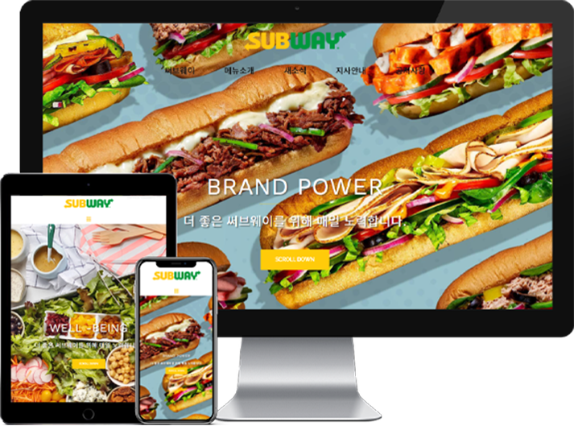

본문 컨텐츠 영역
HOME
끊임없이 탐구하고 배움을 찾아 항해하는 웹 퍼블리셔/프론트엔드 개발자 문수옥입니다.
MOON SUOK PROFILE
- 문수옥 MOON SUOK. 1995.03.08
- 웹 퍼블리셔 / 프론트엔드 개발자
- Phone
- 010-7477-9963
- 900408so@gmail.com
- 사용기술
- HTML5, CSS3(SASS, LESS), JavaScript, jQuery, 비동기처리(JSON/AJAX), Framework(Bootstrap), CMS(WordPress) PHP, MySQL, Git, Adobe Photoshop, MS Office(Excel, Word, PowerPoint)
금호석유화학 기업형PC버전 웹사이트 제작


- (주) 금호석유화학 기업형 PC
- xhtml로 구현되어있던 기존사이트를 html5 / css3를 사용하여 트렌드를 반영한 디자인으로 새롭게 구현하였으며, 이미지로 표현되어있던 텍스트 변환 및 이미지 태그의 누락된 alt 속성 추가로 웹표준을 준수하고, 접근성을 높이는방식으로 개선하였습니다.
- 제작기간
- 2021.11.08 ~ 2021.12.05 (약 4주)
- 사용기술
- HTML5, CSS3(SASS, LESS), JavaScript, jQuery, 비동기처리(JSON/AJAX), PHP, MySQL, Git, Adobe Photoshop, W3C 웹표준 마크업 검사(HTML, CSS), 웹접근성검사(K-WAH), 대표 기기별 테스트 완료, 크로스브라우징 완료
금호석유화학 기업형 모바일버전 웹사이트 제작


- (주) 금호석유화학 기업형 MOBILE
- xhtml로 구현되어있던 기존사이트를 html5 / css3를 사용하여 트렌드를 반영한 디자인으로 새롭게 구현하였으며, 이미지로 표현되어있던 텍스트 변환 및 이미지 태그의 누락된 alt 속성 추가로 웹표준을 준수하고, 접근성을 높이는방식으로 개선하였습니다.
- 제작기간
- 2021.12.13 ~ 2021.12.21 (약 1주)
- 사용기술
- HTML5, CSS3, JavaScript, jQuery, JSON, AJAX, Adobe Photoshop, W3C 웹표준 마크업 검사(HTML, CSS), 웹접근성검사(K-WAH), 대표 기기별 테스트 완료, 크로스브라우징 완료
영화 니모를 찾아서 반응형 웹사이트 제작


- FINDING NEMO RESPONSIVE
- 애니메이션 ‘니모를 찾아서’를 주제로 한 웹사이트로, 다양한 디바디스에서 폭 넓게 이용 할 수 있도록 반응형 웹을 제작하였습니다.
- 제작기간
- 2022.01.03 ~ 2022.01.14 (약 2주)
- 사용기술
- HTML5, CSS3(SASS, LESS), JavaScript, jQuery, 비동기처리(JSON/AJAX), Adobe Photoshop, W3C 웹표준 마크업 검사(HTML, CSS), 웹접근성검사(K-WAH), 대표 기기별 테스트 완료, 크로스브라우징 완료
럭셔리 브랜드 프라다 부트스트랩 웹사이트 제작

- PRADA BOOTSTRAP
- 럭셔리 패션 브랜드 ‘프라다’를 주제로 부트스트랩을 사용하여 보다 간편하게 반응형 웹을 제작하였습니다.
- 제작기간
- 2022.01.27 ~ 2022.01.31 (약 5일)
- 사용기술
- HTML5, CSS3(media query)와 Javascript, jQuery, BOOTSTRAP 프레임워크를 이용하여 디바이스 / 해상도 별 반응형 UI구현, Adobe Photoshop, W3C 웹표준 마크업 검사, 웹접근성검사(K-WAH), 대표 기기별 테스트 완료
글로벌 샌드위치 브랜드 써브웨이 워드프레스 웹사이트 제작

- 써브웨이 WORDPRESS
- 글로벌 샌드위치 브랜드 ‘써브웨이’를 주제로 가장 널리 사용되는 오픈소스 CMS 중 워드프로세스를 사용하여 반응형 웹을 제작하였습니다.
- 제작기간
- 2022.03.07 ~ 2022.03.09 (약 3일)
- 사용기술
- Wordpress 테마 'Sydney'와 플러그인 ‘Elementor’를 활용한 웹사이트 구현, Adobe Photoshop W3C 웹표준 마크업 검사, 웹접근성검사(K-WAH), 대표 기기별 테스트 완료